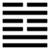

Thủy Trạch Tiết (節 jié)
Không thể để cho ly tán hoài được, tất phải chặn bắt lại, tiết chế lại, cho nên sau quẻ Hoán tới quẻ Tiết.
Thoán từ:
節: 亨．苦節不可貞．
Tiết : Hanh. Khổ tiết bất khả trinh.
Dịch: Tiết chế thì hanh thông. Nhưng tiết tiết chế đến mức cực khổ thì không ai chịu được lâu.
Giảng: Theo tượng quẻ, trên chằm có nước; bờ chằm hạn chế số nước chứa trong chằm, cho nên đặt tên là quẻ Tiết.
Cái gì cũng vừa phải thì mới tốt, thái quá cũng như bất cập đều xấu cả. Quẻ này có ba hào cương, ba hào nhu, không bên nào quá; lại thêm hào 2 và hào 5 đều là dương cương mà đắc trung, như vậy là xử sự đươc trúng tiết, cho nên việc gì cũng hanh thông. Nhưng tiết chế qúa, bắt người ta khổ cực thì không ai chịu được lâu, như vậy không còn hanh thông nữa.
Thoán truyện khuyên nhà cầm quyền nên theo luật tiết chế của trời đất: bốn mùa thay đổi, nắng mưa, nóng lạnh đều có chừng mực, mà trị dân: hạn chế lòng ham muốn, tính xa xỉ của con người, bắt dân làm việc vừa sức thôi, như vậy không tốn của cải, không hại dân (tiết dĩ chế độ, bất thương tài, bật hại dân). Lời đó giống lời khuyên trong Luận ngữ: “Tiết dụng nhi ái dân” (dè dặt trong việc tiêu dùng mà yên dân).
Đại tượng truyện khuyên người quân tử (quân tử ở đây trỏ hạng người trị dân) đặt ra số, độ, nghĩa là hạn định một chừng mực nào đó trong sự làm việc và hưởng thụ của dân, tùy đạo đức, tài nghệ của mỗi người. (Quân tử, dĩ chế số độ, nghị đức hạnh). Như vậy là Đại tượng truyện đã cho chữ tiết một tác dụng rất lớn: tiết chế có nghĩa gần như kế hoạch hoá ngày nay và có mục đích thi hành sự công bằng trong xã hội, như lời Đại tượng truyện quẻ Khiêm (xứng vật bình thí: cho sự vật được cân xứng, quân bình).
Ý nghĩa các hào:
1.
初九: 不出戶庭, 无咎．
Sơ cửu: Bất xuất hội đình, vô cữu.
Dịch: Hào 1, dương: không ra khỏi sân ngõ, không có lỗi.
Giảng: Hào này dùng chữ tiết với nghĩa tự mình tiết chế mình, tức dè dặt. Ở với tời Tiết chế, làm việc gì cũng phải đúng mức (trung tiết) mới tốt. Hào, 1 dương cương, đắc chính, ở đầu thời Tiết chế, biết thận trọng, không ra khỏi sân ngõ, vì biết là thời chưa thông, hãy còn tắc, như vậy là đúng với đạo tiết chế, không có lỗi. Hai chữ “hộ đình chúng tôi dịch theo nghĩa “ngoại chi đình” của Chu Hi. J legge dịch là không ra khỏi cái sân ở ngoài cái cửa (door): R. Wilhelm dịch là không ra khỏi cái sân và cái cửa (door).
2.
九二: 不出門庭, 凶．
Cửu nhị: Bất xuất môn đình, hung.
Dịch: Hào 2, dương: không ra khỏi cái sân ở trong cửa, xấu.
Giảng: Hào này đáng lẽ ra giúp việc được, vì thời đã khác thời của hào 1 đã thông rồi không tắc nữa mà lại được hào 5 ở trên cũng dương như mình giúp sức cho; vậy mà đóng cửa không ra cũng như 1, hành vi đó xấu (hung).
Chữ môn J.Legge và R Wilhelm đều dịch là gate, cửa ngõ, tức cửa ở ngoài cùng. Từ Hải chỉ Giảng: cửa có một cánh gọi là hộ, hai cánh gọi là môn, tối không biêt cái nào là cửa ngõ, cái nào là cửa nhà. Phan Bội Châu không phân biệt thế nào là môn, là hộ, dịch là cửa hết. Ðiểm đó không quan trọng; chỉ cần hiểu đại khái là không ra khỏi nhà, không đi đâu.
3.
六三: 不節若, 則嗟若,无咎．
Lục tam: Bất tiết nhược, tất ta nhược, vô cữu.
Dịch: Hào 3, âm: không dè dặt (tự tiết chế mình) mà phải than vãn, không đổ lỗi cho ai được.
Giảng: Âm nhu, bất trung bất chính, lại cưỡi lên hai hào dương, mà muốn tiến tới cõi nguy hiểm (quẻ Khảm ở trên), như vậy là không biết dè dặt, tự chế, rước vạ vào thân, còn đổ lỗi cho ai được nữa.
4.
六四．安節,亨．
Lục tứ: An tiết, hanh.
Dịch: Hào 4, âm: Vui vẻ tự tiết chế (không miễn cưỡng) hanh thông.
Giảng: Nhu thuận, đắc chính, vâng theo hào 5, thực tâm dè dặt, tự tiết chế đúng thời, cho nên hanh thông.
5.
九五: 甘節, 吉．往有尚．
Cửu ngũ: Cam tiết, cát. Vãng hữu thượng.
Dịch: Hào 5, dương: Tiết chế mà vui vẻ (cho là ngon ngọt) thì tốt. Cứ thế mà tiến hành thì được người ta trọng, khen.
Giảng: Hào này ở vị chí tôn, làm chủ quẻ Tiết, có đủ các đức dương cương trung chính tự tiết chế một cách vui vẻ, thiên hạ noi gương mà vui vẻ tiết chế, cho nên tốt; và cứ thế mà tiến hành thì có công lớn, đáng khen.
6.
上六: 苦節, 貞凶, 悔亡．
Thượng lục: Khổ tiết, trinh hung. Hối vong.
Dịch: Hào trên cùng, âm: Tiết chế mà tới mức cực khổ, nếu cứ giữ mãi (trinh) thôi đó thì xấu. Nếu biết hối hận, bớt thái quá đi thì hết xấu.
Giảng: Hào này trái với hào trên, vì ở trên cùng quẻ Tiết, có nghĩa là tiết chế thái quá, tới cực khổ, không ai chịu được hoài như vậy.
Hai chữ “hối vong” ở đây không có nghĩa thường dùng là hối hận tiêu tan đi, mà có nghĩa là nếu hối hận thì cái xấu (hung) sẽ tiêu tan đi.
Sau một cuộc ly tán, phong tục suy đồi, kinh tế cùng quẩn, cho nên phải tiết dục, tiết chế nhu cầu. Nhưng tiết chế một cách vừa phải thôi (không nên thái quá) mà hợp thời thì mới tốt. Chúng ta nhận thấy 6 hào chia làm 3 cặp: 1 và 2 liền nhau mà 1 tốt, 2 xấu; 3 với 4 liền nhau mà 3 xấu, 4 tốt; 5 và 6 liền nhau mà 5 tốt 6 xấu; chỉ do lẽ hoặc hợp thời hay không, đắc trung, đắc chính hay không.